تقدير اليوم
تقدير اليوم

تستعرض الإحاطة أبرز تطورات الشهر عبر خمسة محاور: موجز تنفيذي، التطورات الأمنية والعسكرية، السياسية والدبلوماسية، الاقتصادية، واستشراف المرحلة القادمة.
 5 تموز/يوليو, 2026
5 تموز/يوليو, 2026
الوضع الميداني جنوب لبنان بين إعادة الانتشار والدور الدولي — وأي مسار ينتظر التسوية الداخلية في المرحلة المقبلة؟
خريطة المصالح المتشابكة للقوى الإقليمية والدولية على الساحل الإفريقي الشرقي، وانعكاساتها على أمن الممرات البحرية.
 28 حزيران/يونيو, 2026
28 حزيران/يونيو, 2026
تدوينة رصد لحظية من وحدة المتابعة — تُحدَّث على مدار الساعة أيام التصعيد.
سجل الرصد الكامل ←تشير مؤشرات إعادة التفاوض على القواعد والتخفيضات المتتالية في القوام إلى مسار انسحاب متدرج تفرضه كلفة البقاء وتحولات الأولويات الدولية.
ما يبدو انسحاباً هو إعادة توزيع للأدوار: قواعد أقل وأدوات نفوذ أكثر — من الاقتصاد إلى الطاقة إلى اتفاقيات الأمن الثنائية طويلة الأمد.
مركزٌ بحثي متخصص في تحليل التفاعلات السياسية والأمنية والعسكرية، يُعنى بالشأن السوري أساساً ويمتد إلى ساحات التوتر والنزاع في المنطقة والعالم.
إحصائيات محدّثة تلقائياً لعدد الأبحاث والمنشورات


.svg?width=700)